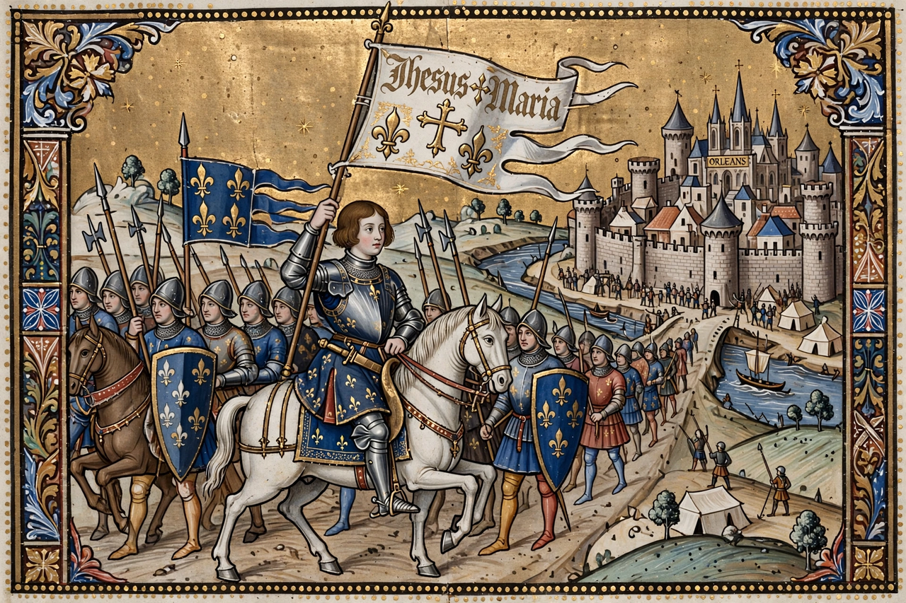

Joan of Arc

Joan of Arc in armour at the siege of Orléans, from a 15th-century manuscript
Joan of Arc (c. 1412 – 30 May 1431), nicknamed the Maid of Orléans, was a French peasant girl who, believing she acted under divine guidance, led the French army to a momentous victory at Orléans in 1429 during the Hundred Years' War, breaking the English siege and enabling Charles VII's coronation at Reims. Captured by Burgundian troops at Compiègne in 1430, she was sold to the English, tried for heresy by a pro-English church court, and burned at the stake in Rouen at about nineteen. Twenty-five years later a papal inquiry overturned the verdict; she was canonised in 1920 and is a national heroine and patron saint of France.
From Domrémy to Orléans
Born to a prosperous peasant family in Domrémy, Joan began at about thirteen to hear the 'voices' of saints Michael, Catherine and Margaret urging her to drive out the English. In 1429 she persuaded the local captain to take her to the Dauphin Charles at Chinon, was examined by theologians at Poitiers, and was given troops and armour. Her arrival at besieged Orléans in April 1429, and the aggressive assaults that raised the siege within days, electrified France and terrified the English, who regarded her as a witch.
Capture, trial and afterlife
After the coronation journey to Reims (July 1429) and a failed attack on Paris, Joan was captured at Compiègne (May 1430). Her trial at Rouen (1431), presided over by Bishop Pierre Cauchon, condemned her chiefly for wearing men's clothing and for her voices; she abjured, then relapsed, and was burned on 30 May 1431. The nullification trial of 1456 cleared her name. Her image has been remade by every age — Shakespeare's witch, Voltaire's mock-heroine, Michelet's saint of the people, and a Catholic saint canonised in 1920.